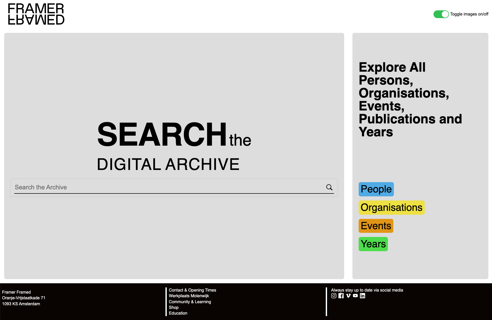
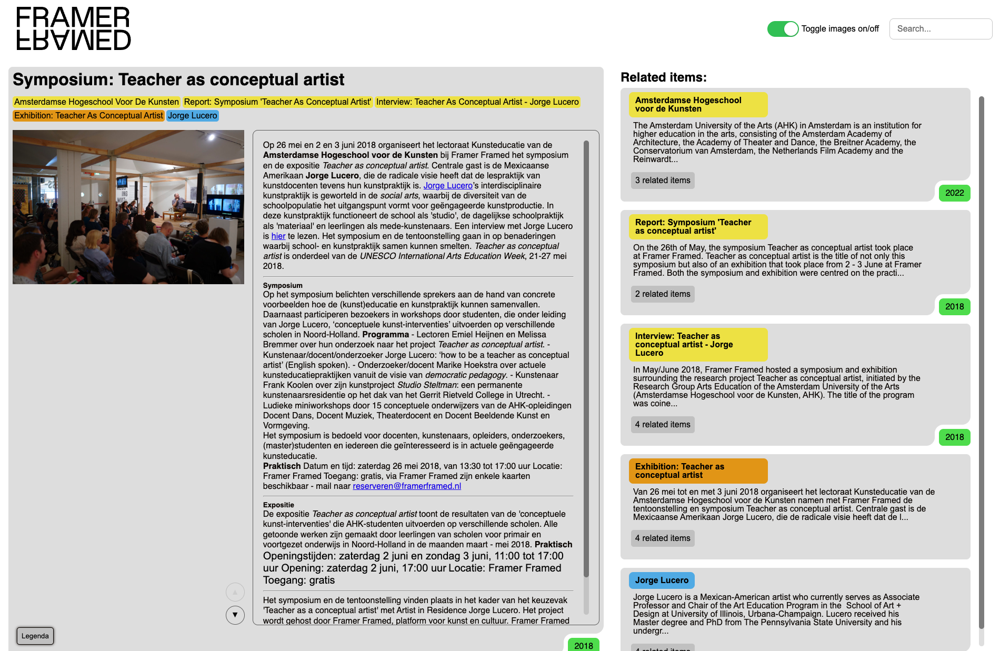

In this edition
Click to flip to the page
Iris kreike || 2025
Click to flip to the page
API's and web standards
The web is a wonderful place, and the technologies available today are more powerful than ever before. The strength of the web lies in the fact that it is a platform available to everyone and is built on open standards. The technologies are designed and specified through consensus and are not controlled by any single entity.
With this project we experienced the power of the web by making a (mobile) web app just as engaging as native mobile apps. I made a server-side rendered application, enchanced with the use of content and web API's
The newest chat
Click here to enter the newest chat server – to feel less lonely, a second browser is recommended – not a scamFollow the link to the Render server, where you will be asked to fill in a name to log in. Once done, you enter a chatroom with all people currently connected to the server. Send messages to other people (or yourself in another window), or use the command
/random-fact
or command
/random-fact [number]
for a fun random fact.
accesibility, testing and user experience
The web is for everyone. That means we can create things that everyone can use. But do we really know everyone?
Through the use of the exclusive design principles, I designed a prototype for Darice, a woman who became deaf later in life. She would love to experience hearing movies and podcasts again, with all hearable details. I was challenged to create a new way to experience sound effects.
See the Pen intro+ circus by IKreike (@IKreike) on CodePen.
I recommend playing the first few seconds of the clip a few times without sound, so you can see the sound at it was intended to be.
Animation and audio design
What would it be like if you could experience a comic from within? With animation, sound design and a whole lot of projectors it is possible.
It is recommended to play the video with audio for a full experience
Combining senses like sound and sight makes a project immersive an enticing to the viewer. Combining Audio and visual design takes the vieuwer on a trip into the forest displayed, strengened by the creatures not being confined by their comic-book boxes.
This project makes use of a looping comic, with audio design for each panel of the story. This is displayed in an Immersive room, where people can stand and see the comic play out around them.
your weekly selection of music
I found this song when i was studying for the final high school exams. It perfectly portrayes how i felt going for a new chapter in my life, and every year since when I have to make big desisions it shows up on my desk. Give a listen to it, and maybe it will bring you a sense of reassurance too. Because everything will land on its feet in the end.
accesibility and teamwork
In a team of 4 we designd and created a search and discoverysite for the gallery Framer Framed in Amsterdam. All items in this enormous database were connected and related to eachother, and we wanted to highlight this and allow the users to explore.
With our focus group being visually impaired and blind people we paid special attention to the keyboard functionality of our project. We made sure there are not many links, and link titles were short and understandable.
The database itself was a challenge, as its structure differentiates between different kinds of subjects. We solved this problem by creating different filters and layouts, so every element in the database could be covered.
We paid special attention to the colors used in this project, as we wanted the colors to be distinct in every situation. Every color used has a color contrast of 6 or higher against its text color, and the pallette is completely colorblind friendly.
the new site (if it gets online)
Interaction
Hi there, welcome! For a message without a sound, a simple gesture is enough. At amstelstation, if the windows are dark, a welcoming gesture is made to invite you to explore.
Interaction, Immersive
Going from place to place, trapped in your own mind and thoughts. Follow these lanterns in a path full of light and wonder.

In a series of 5 lanterns, one stands out. It is inhabited by a blue dancing light. When you come closer and tap on the lantern, the light jumps out and races across the floor to a nearby lantern.


The myth of the will 'o whisp is said to mislead travelers. Seen at night in bogs and swamps, resembeling a flickering lantern the traveler would follow, straying of the given path to create his own.
CSS
An Entire site just with css? No way. Yet the impossible has been accomplished. Using the power of CSS, I made an interactive module, where each lever and button interacts with the setup.
Through CSS selectors, form elements, and animation. Together, they create a beautiful project where CSS is the hero — and where a lot of valuable experience was gained.
Iris Kreike
I am a Communication and Multimedia Design student at the Amsterdam University of Applied Sciences (HvA), and I recently discovered my passion for CSS and front-end design. During my studies, I have worked on various projects where usability, design, and technology come together. My goal for the future is to further develop my skills in web and front-end development.
You can find me here: